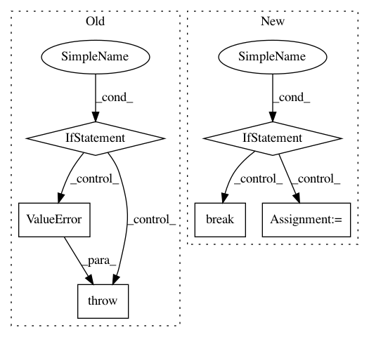

65d4d10a980fa35c383e2a0c583224d5d2ee13b6,python/src/nnabla/core/variable_batch_size.py,,variable_batch_size,#Any#,18
Before Change
b = network.variables[pf.inputs[0]].shape[0]
if expect_batch_size is None:
expect_batch_size = b
if b != expect_batch_size:
raise ValueError("Variable "{}" has different batch size {} (expected {})".format(
pf.inputs[0], b, expect_batch_size))
if pf.type == "Reshape":
arg_shape = pf.args["shape"]
assert (arg_shape[0] == expect_batch_size)
pf.args["shape"] = [-1] + arg_shape[1:]
After Change
if "base_axis" in pf.args and pf.args["base_axis"] != 0:
base_axis = pf.args["base_axis"]
for pv_name in pf.inputs:
if pv_name in network.variables:
shape = network.variables[pv_name].shape
expect_batch_size = np.prod(shape[:base_axis])
break
if expect_batch_size is None:
return
// Dim 0 of shape expects to be batch size,
In pattern: SUPERPATTERN
Frequency: 3
Non-data size: 6
Instances
Project Name: sony/nnabla
Commit Name: 65d4d10a980fa35c383e2a0c583224d5d2ee13b6
Time: 2021-03-30
Author: Yuchi.Wen@sony.com
File Name: python/src/nnabla/core/variable_batch_size.py
Class Name:
Method Name: variable_batch_size
Project Name: scipy/scipy
Commit Name: f30505b836141030f50cdd941f9cbc8f4cda0995
Time: 2016-02-29
Author: pav@iki.fi
File Name: scipy/sparse/linalg/isolve/lgmres.py
Class Name:
Method Name: lgmres
Project Name: tensorlayer/tensorlayer
Commit Name: c7e19808f4956666ae23f69364642108a4fe2513
Time: 2019-04-04
Author: ivbensekin@gmail.com
File Name: tensorlayer/layers/core.py
Class Name: Layer
Method Name: __init__